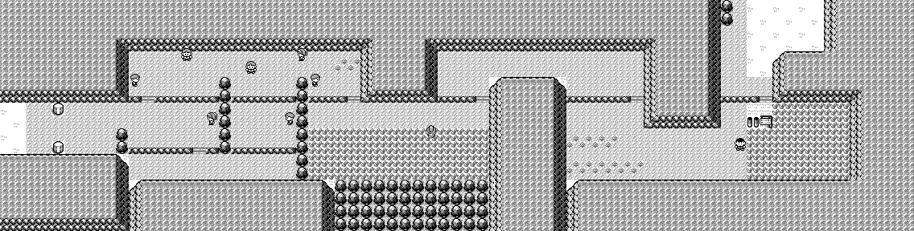
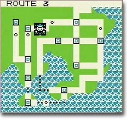

Noise.
Alright so if you stick to two sequences of square wave notes on top of eachother youre in real Game Boy territory. But youre missing part of your artistic sound palette (town). The drums.
People hear "noise" and think "bad sound", but old game music uses noise for percussion all the time. Snare hits, hi-hats, little footstep ticks, explosions, wind, surf, impact sounds.
Listen to the Route 3 theme from Pokemon Red/Blue/Gweeen. You can hear two pulse channels, and then underneath that theres a fuzzy pixelated snare drum. We can't make that sound with the square, triangle, sin, or pulse waves. We need a noise voice.


Here is that same recording filtered so the noise-based snare voice stands out. It is not perfectly isolated, but it pushes the square-wave voices back enough that you can focus on the fuzzy hits.
A noise voice is just less orderly samples. Instead of drawing a clean repeating square wave, we dump random numbers into the sample list.
import random
sample_rate = 44100
seconds = 0.7
volume = 0.18
num_samples = int(seconds * sample_rate)
samples = []
for sample_index in range(num_samples):
random_offset = random.uniform(-1, 1)
sample = random_offset * volume
samples.append(sample)That spits out a big list of offsets like this.
[
0.07, -0.13, 0.16, 0.02, -0.17, 0.11, -0.04, -0.09,
0.18, 0.05, -0.15, 0.10, -0.01, -0.18, 0.14, -0.06,
0.03, 0.17, -0.12, -0.08, 0.01, -0.16, 0.09, 0.12,
...
]See thats already pretty good, but it doesnt sound like a drum. We can make it quieter or louder, but to get percussion we are going to need some more character knobs.
Lets put a hold setting on the random value. The hold decides how many samples
reuse the same random number. If the hold is 4, we reuse the same
random value 4 times before picking a new one. Then we play the new one for 4 samples, etc etc.
A small hold sounds more like pure noise where every sample is different. A big hold is
lower resolution and chunkier, like we zoomed in on the noise and played it back
blockier.
import random
volume = 0.18
num_samples = 32
hold = 4 # this is the character knob we just added
samples = []
current_random_value = 0
for sample_index in range(num_samples):
# Every 4 samples, choose a new random offset.
if sample_index % hold == 0:
current_random_value = random.uniform(-1, 1)
sample = current_random_value * volume
samples.append(sample)Heres some sample lists made with different hold settings.
# hold = 0
# Nothing ever asks random for a new value.
# This is useless for noise. It is just flat.
[0.0, 0.0, 0.0, 0.0, 0.0, 0.0, 0.0, 0.0, ...]
# hold = 1
# Every sample gets a new random value.
[0.8, -0.3, 0.1, -0.9, 0.4, 0.6, -0.2, -0.7, ...]
# hold = 2
# Pick one random value, hold it for 2 samples, then pick another.
[0.8, 0.8, -0.3, -0.3, 0.1, 0.1, -0.9, -0.9,
0.4, 0.4, 0.6, 0.6, -0.2, -0.2, -0.7, -0.7, ...]
# hold = 4
# Pick one random value, hold it for 4 samples, then pick another.
[0.8, 0.8, 0.8, 0.8, -0.3, -0.3, -0.3, -0.3,
0.1, 0.1, 0.1, 0.1, -0.9, -0.9, -0.9, -0.9, ...]You can do this continuously too.
import random
hold = 4
volume = 0.18
current_random_value = 0
samples_until_next_random_value = 0
while True:
if samples_until_next_random_value == 0:
current_random_value = random.uniform(-1, 1)
samples_until_next_random_value = hold
offset = current_random_value * volume
samples_until_next_random_value -= 1
play_one_sample(offset)
That sounds like this. You'll likely instantly find this sound familiar if you're old. Adjust the hold setting to get a feel for how it changes the sound.
You can see how a higher hold setting feels like a lower pitch sound, and a lower
hold setting feels like a higher pitch sound. Thats because we are changing the
offset every n samples. At 44100 samples per second,
hold = 169 changes the value about 44100 / 169 times
per second, which is 260.95 Hz. Thats close to middle C on a piano,
which is about 261.63 Hz.
Notes can show up in unexpected places.
sample_rate = 44100
note_names = [
"C", "C#", "D", "D#", "E", "F",
"F#", "G", "G#", "A", "A#", "B",
]
# make the note -> freq lut
note_frequency = {}
for midi_note in range(60, 73): # C4 through C5
name = note_names[midi_note % 12]
octave = (midi_note // 12) - 1
note_name = f"{name}{octave}"
semitones_from_a4 = midi_note - 69
frequency = 440 * (2 ** (semitones_from_a4 / 12))
note_frequency[note_name] = frequency
print(note_frequency["C4"]) # 261.625565...
# make the note freq -> equivalent hold value lut
note_hold = {}
for note_name, frequency in note_frequency.items():
hold = round(sample_rate / frequency)
note_hold[note_name] = hold
print(note_hold["C4"]) # 169
print(note_hold["A4"]) # 100
buttons = [
"C4", "C#4", "D4", "D#4", "E4", "F4",
"F#4", "G4", "G#4", "A4", "A#4", "B4", "C5",
]
for note_name in buttons:
hold = note_hold[note_name]
print(note_name, "uses hold", hold)Lets add a fade out mechanic so our noise based sounds appear to trail off like real sounds.
import random
sample_rate = 44100
seconds = 0.7
volume = 0.24
hold = 28
num_samples = int(seconds * sample_rate)
samples = []
current_random_value = 0
samples_until_next_random_value = 0
for sample_index in range(num_samples):
if samples_until_next_random_value == 0:
current_random_value = random.uniform(-1, 1)
samples_until_next_random_value = hold
time = sample_index / sample_rate
fade = max(0, 1 - time / seconds)
offset = current_random_value * volume * fade
samples.append(offset)
samples_until_next_random_value -= 1You can see how we can make varied sound effects with this tool.
import random
import time
sample_rate = 44100
def noise(sample_index, sample_rate, state, hold, volume):
if sample_index % hold == 0:
state[0] = random.uniform(-volume, volume)
return state[0]
hold = 28
volume = 0.24
fade_seconds = 0.22
hit_seconds = 0.28
random_hold_delta = 18
random_fade_delta = 0.10
repeat_rate = 0.24
while True:
this_hold = hold + random.randint(-random_hold_delta, random_hold_delta)
this_hold = max(1, this_hold)
this_fade = fade_seconds + random.uniform(-random_fade_delta, random_fade_delta)
this_fade = max(0.04, this_fade)
samples = render(noise, hit_seconds, this_fade, [this_hold, volume])
play(samples)
time.sleep(repeat_rate)Dial the params in to get drums, and cymbals.